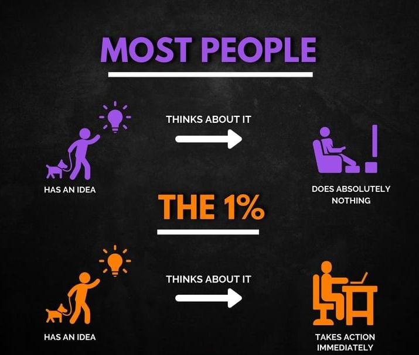

Where can i get an idea ?
There are many ways in which one can get ideas. Some of them include the following
- Bebe Hub the home of dreams
- Imagination
- Hobby
- Reading newspapers and magazines
- Exposure- moiving around chating with friends, linking up with different people, visiting different places, through this you can come up with something
Only to mention a few
Usually a best idea is the one you come up with and is linked to something you like to do in your daily routine
Transforming a dream into reality

At BebeHub, if you have an idea about something then we call it a dream.
As you as you think of something, take action immediately before you forget it. Visit BebeHub with your idea and will help you develop that idea
into something real. It`s all about commitment. Besides visiting us, you can search over the internet about your idea. If you think about starting
a project, we also provide guides and a plan to help you make your dream come true.
How to get help from BebeHub
- Request for an appointment with us through our social media platforms or visiting us
- Wait till we call you back and it`s a short period of time about 2/3 days
- We will ask you to either come to our base or you can tell us a place you are comfortable to meet
The reason why we do like to do a face to face meeting at the first instance is that we do like to know first the people we will be dealing with.
Please don`t forget to sign up so that when we do our first meeting we don`t waste much time doing paperwork of filling in personal details.
To sign up go back to the home page and then click signup .
Click item following to go back to home page.